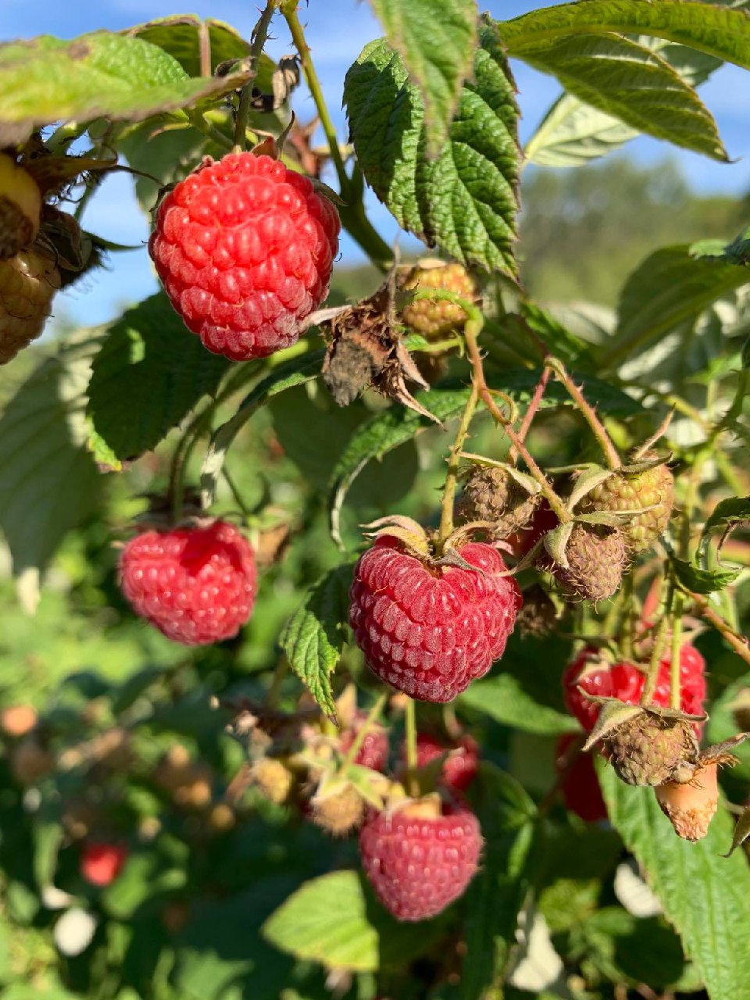

Сорт Херітейдж (Heritage) — це один із найпопулярніших ремонтантних сортів малини, виведений у США.
Його цінують за стабільний урожай, витривалість і чудовий смак ягід.

Тип: ремонтантний (дає два врожаї на рік — улітку і восени).
Кущ: прямостоячий, середньорослий або високорослий (до 1,5–2 м), не потребує підв’язки, але при інтенсивному плодоношенні рекомендується підтримка.
Ягоди: середнього розміру (3–4 г), насичено червоні, округло-конічні, щільні, добре зберігаються і транспортуються.
Смак: солодкий із ледь відчутною кислинкою, ароматний.
Урожайність: висока — до 3 кг ягід із куща за сезон.
Морозостійкість: добра, витримує до –25 °C, але в суворі зими рекомендується легке укриття.
Стійкість до хвороб: висока, особливо до кореневих гнилей та вірусних захворювань.